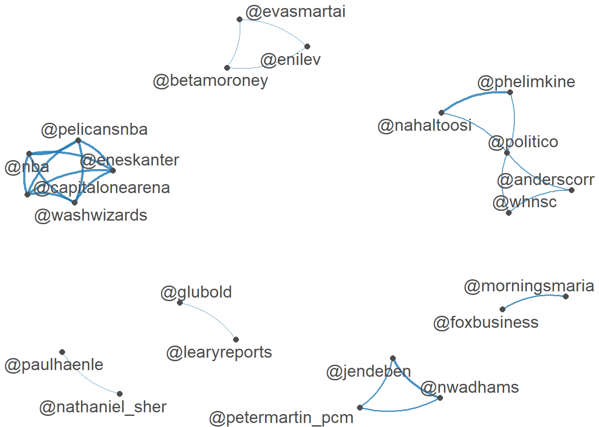
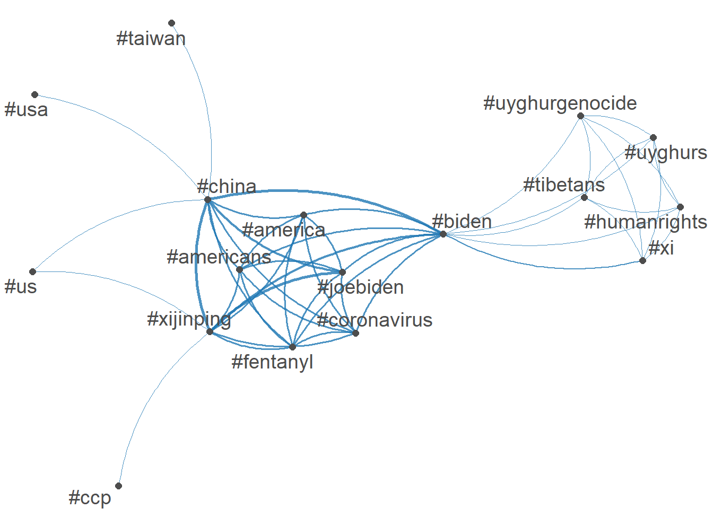
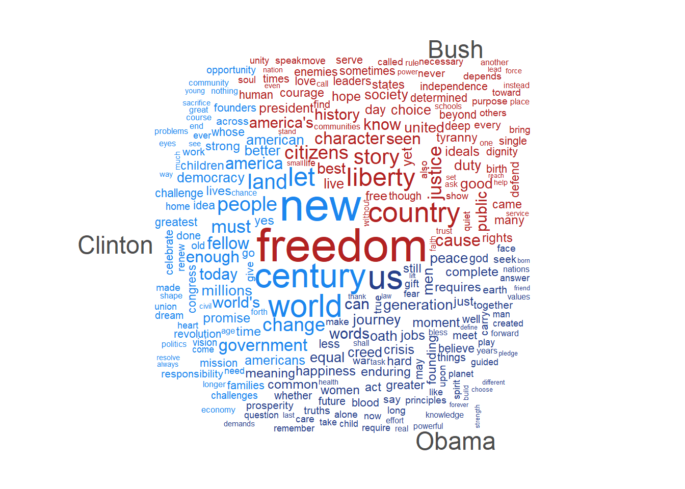
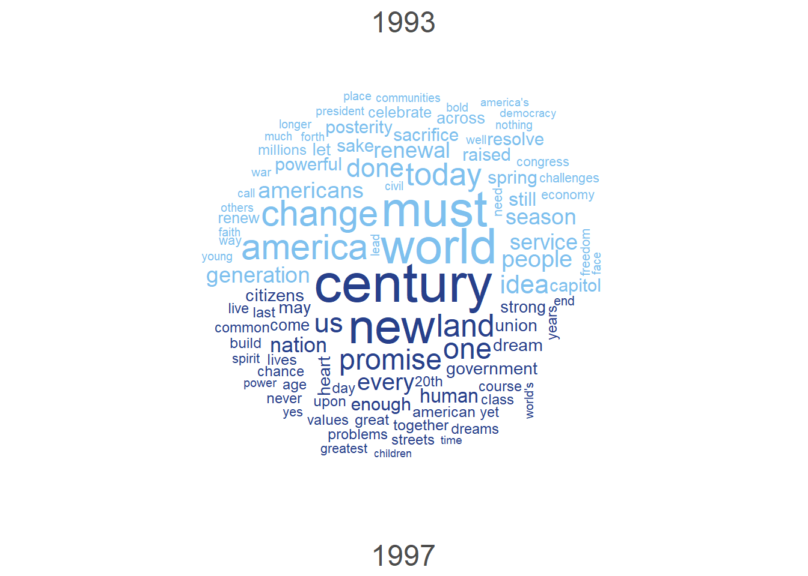
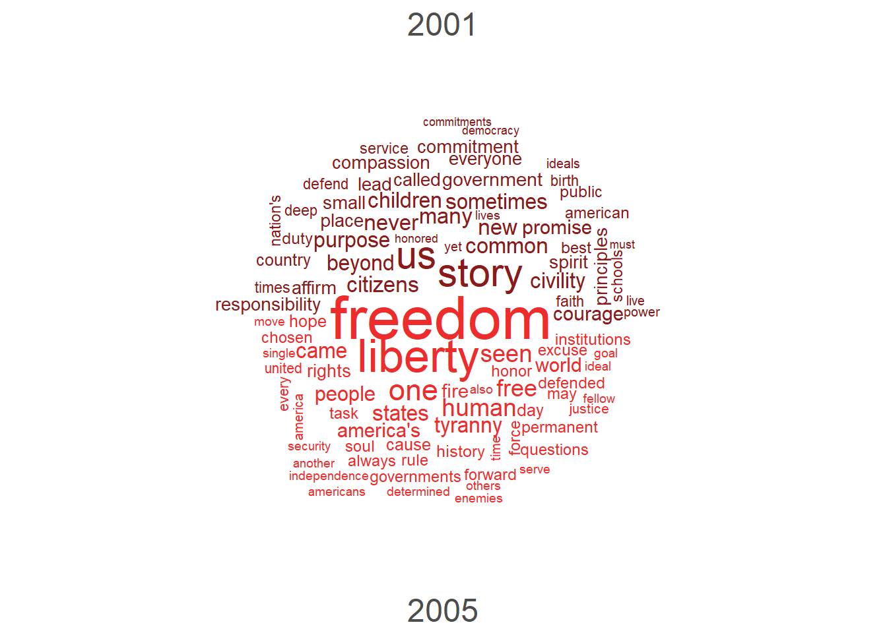
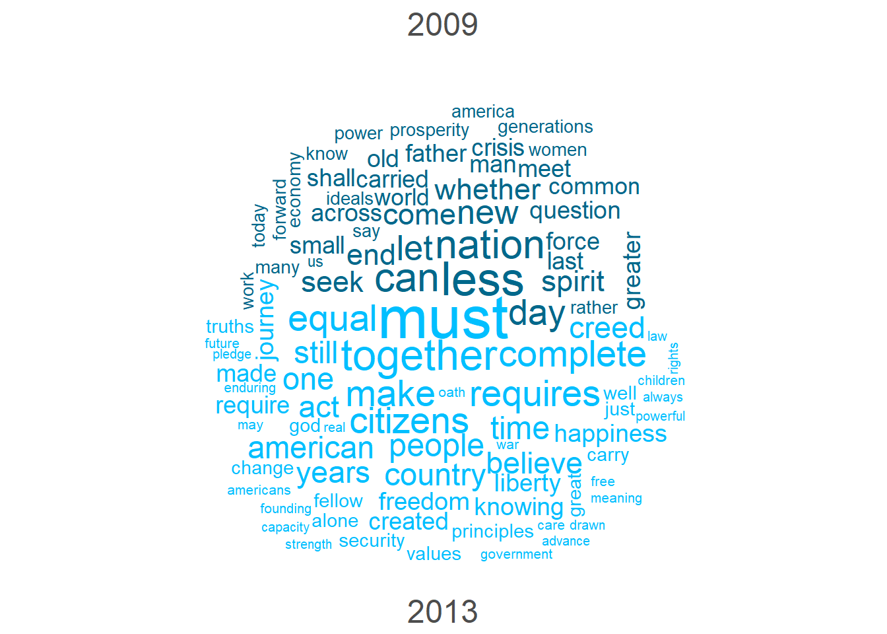
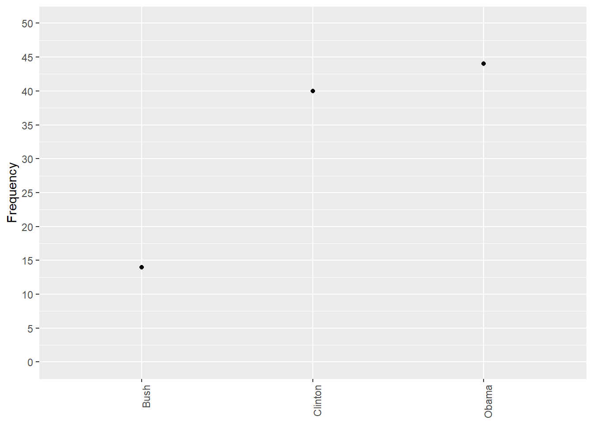
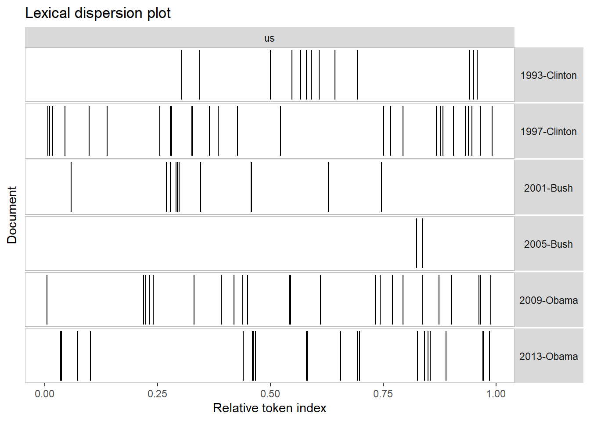

pacman::p_load(quanteda, quanteda.textmodels, quanteda.textplots, ggplot2, dplyr, readtext)Assignment 3
Introduction
In this project, I will use the quanteda package in R to conduct text analysis. The focus will be on two main exploratory analyses:
- Analyzing tweets posted during a selected period.
- Examining inauguration speeches from different U.S. presidents. The goal of both analyses is to highlight some of the key features and capabilities of the
quantedapackage for text analysis. The necessary packages for the analysis are loaded with the line below:
Tweets Analysis
The block below loads data, performs an initial preprocessing and creates a document-feature matrix that will constitute the basis for further analysis.
# Loading the data
data_tweets <- readtext("https://raw.githubusercontent.com/datageneration/datamethods/master/textanalytics/summit_11162021.csv", text_field = 'text')
corpus_tweet <- corpus(data_tweets)
# Creating the main document feature matrix
dfm_tweet <- corpus_tweet |>
tokens(remove_punct = T) |>
tokens_remove(stopwords("en")) |>
dfm()In this analysis, I will explore the interactions between users as well as the most common tags used in the collected tweets. I will also explore which tags tend to appear together in the tweets. However, before doing all that, I will create subset matrices containing only users and tags.
dfm_users <- dfm_select(dfm_tweet, pattern = "@*")
topusers <- dfm_users |> topfeatures(50) |> names()
head(topusers)[1] "@potus" "@politico" "@joebiden" "@jendeben" "@eneskanter"
[6] "@nwadhams" dfm_tags <- dfm_select(dfm_tweet, pattern = "#*")
toptags <- dfm_tags |> topfeatures(50) |> names()
head(toptags)[1] "#china" "#biden" "#xijinping" "#joebiden" "#america"
[6] "#americans"In this step, I will create correlation matrices for the top users and tags, print the matrices, and finally plot them.
fcm_users <- fcm(dfm_users)
fcm_users |> fcm_select(pattern = topusers) |> head()Feature co-occurrence matrix of: 6 by 50 features.
features
features @joebiden @nytimes @wsj @onlyyoontv @ak_mack @kaylatausche
@joebiden 3 1 1 0 0 0
@nytimes 0 0 1 0 0 0
@wsj 0 0 0 0 0 0
@onlyyoontv 0 0 0 0 0 0
@ak_mack 0 0 0 0 0 0
@kaylatausche 0 0 0 0 0 0
features
features @eneskanter @potus @uyghur_american @thehillopinion
@joebiden 1 5 0 0
@nytimes 0 2 0 0
@wsj 0 0 0 0
@onlyyoontv 0 0 0 0
@ak_mack 0 0 0 0
@kaylatausche 0 0 0 0
[ reached max_nfeat ... 40 more features ]fcm_users |> fcm_select(pattern = topusers) |>
textplot_network(edge_alpha = 0.8, edge_size = 1)
Figure 1. Network Plot of X users mentioned in Tweets
fcm_tags <- fcm(dfm_tags)
fcm_tags |> fcm_select(pattern = toptags) |> head()Feature co-occurrence matrix of: 6 by 50 features.
features
features #breaking #biden #china #usa #pray4america #joebiden #xijinping
#breaking 0 5 5 5 0 0 0
#biden 0 0 443 49 0 299 370
#china 0 0 8 76 0 339 434
#usa 0 0 0 6 0 12 15
#pray4america 0 0 0 0 0 0 0
#joebiden 0 0 0 0 0 0 426
features
features #america #americans #coronavirus
#breaking 0 0 0
#biden 302 295 295
#china 308 295 295
#usa 0 0 0
#pray4america 0 0 0
#joebiden 297 295 295
[ reached max_nfeat ... 40 more features ]fcm_tags |> fcm_select(pattern = toptags) |>
textplot_network(min_freq = 50, edge_alpha = 0.8, edge_size = 1)
Figure 2. Network Plot of Tags in Tweets
Discussion
The network plot shows that the #joebiden tag was a central node in the network given the number of edges that are connected to it. #xijinping was another central tag, although it has fewer links outside of the main cluster in the center of the plot. The reason might be the language of tweets, which was English. It is reasonable to assume that English speakers do not tweet as much about Xi Jinping because they are less well-verse in Chinese news.
US Presidents’ Inaugural Addresses
I first start by listing the document levels variables for the US Presidents’ inaugural addresses corpus. That will allow me to identify some variables to use to filter the documents.
docvars(data_corpus_inaugural) |> names()[1] "Year" "President" "FirstName" "Party" I will compare the most frequent words used in inaugural addresses by presidents Clinton, Bush, and Obama. I chose the latest three presidents to have two inaugural addresses at the time I am completing this project.
corpus_subset(data_corpus_inaugural,
(President %in% c("Clinton", "Obama", "Bush")) & Year > 1989) %>%
tokens(remove_punct = TRUE) %>%
tokens_remove(stopwords("english")) %>%
dfm() %>%
dfm_group(groups = President) %>%
dfm_trim(min_termfreq = 5, verbose = FALSE) %>%
textplot_wordcloud(comparison = TRUE, color = c('firebrick', 'dodgerblue2', 'royalblue4'))Warning in wordcloud_comparison(x, min_size, max_size, min_count, max_words, :
security could not be fit on page. It will not be plotted.Warning in wordcloud_comparison(x, min_size, max_size, min_count, max_words, :
generations could not be fit on page. It will not be plotted.Warning in wordcloud_comparison(x, min_size, max_size, min_count, max_words, :
schools could not be fit on page. It will not be plotted.Warning in wordcloud_comparison(x, min_size, max_size, min_count, max_words, :
instead could not be fit on page. It will not be plotted.Warning in wordcloud_comparison(x, min_size, max_size, min_count, max_words, :
place could not be fit on page. It will not be plotted.Warning in wordcloud_comparison(x, min_size, max_size, min_count, max_words, :
power could not be fit on page. It will not be plotted.Warning in wordcloud_comparison(x, min_size, max_size, min_count, max_words, :
even could not be fit on page. It will not be plotted.Warning in wordcloud_comparison(x, min_size, max_size, min_count, max_words, :
interests could not be fit on page. It will not be plotted.Warning in wordcloud_comparison(x, min_size, max_size, min_count, max_words, :
force could not be fit on page. It will not be plotted.Warning in wordcloud_comparison(x, min_size, max_size, min_count, max_words, :
advance could not be fit on page. It will not be plotted.Warning in wordcloud_comparison(x, min_size, max_size, min_count, max_words, :
means could not be fit on page. It will not be plotted.Warning in wordcloud_comparison(x, min_size, max_size, min_count, max_words, :
peaceful could not be fit on page. It will not be plotted.Warning in wordcloud_comparison(x, min_size, max_size, min_count, max_words, :
wrong could not be fit on page. It will not be plotted.Warning in wordcloud_comparison(x, min_size, max_size, min_count, max_words, :
confidence could not be fit on page. It will not be plotted.Warning in wordcloud_comparison(x, min_size, max_size, min_count, max_words, :
something could not be fit on page. It will not be plotted.Warning in wordcloud_comparison(x, min_size, max_size, min_count, max_words, :
reform could not be fit on page. It will not be plotted.
Warning in wordcloud_comparison(x, min_size, max_size, min_count, max_words, :
reach could not be fit on page. It will not be plotted.Warning in wordcloud_comparison(x, min_size, max_size, min_count, max_words, :
progress could not be fit on page. It will not be plotted.Different key words emerged for the different presidents. “Us” seemed to be the preferred word for president Obama, While President Clinton seemed interested in the then-upcoming 21st century. Finally, the preferred theme for President George W. Bush was freedom.
In the next analysis, I will check whether the main key words changed after the first term for each president.
corp <- data_corpus_inaugural |> corpus_subset((President %in% c('Clinton', 'Bush', 'Obama')) & Year > 1989)
set.seed(123)
corp |>
corpus_subset(President == "Clinton") |>
tokens(remove_punct = T) |>
tokens_remove(stopwords('english')) |>
dfm() |>
dfm_group(groups = Year) |>
textplot_wordcloud(max_words = 100, comparison = T, color = c('skyblue2', 'royalblue4'))
set.seed(123)
corp |>
corpus_subset(President == "Bush") |>
tokens(remove_punct = T) |>
tokens_remove(stopwords('english')) |>
dfm() |>
dfm_group(groups = Year) |>
textplot_wordcloud(max_words = 100, comparison = T, color = c('firebrick4', 'firebrick2'))
set.seed(123)
corp |>
corpus_subset(President == "Obama") |>
tokens(remove_punct = T) |>
tokens_remove(stopwords('english')) |>
dfm() |>
dfm_group(groups = Year) |>
textplot_wordcloud(max_words = 100, comparison = T, color = c('deepskyblue4', 'deepskyblue'))
The word clouds show a difference in most used terms from a term to another. The new century became important to President Clinton on his second term. During the first one, a focus on the world problably suggest an important global agenda.
President Obama, on the other hand, focused on union during his second term. The first term seemed to be centered on the idea of upcoming changes for the nation.
Finally, President’s bush change in focus is perhaps the biggest with a clear focus on freedom during the second term. The first term had a more varied focus.
In the next step, I will plot the most frequently used words across the three studied president. As can be seen in the plot, the most commonly used word by a large margin was “us”. Next, I will analyze how much each president used that word.
pacman::p_load(quanteda.textstats)
dfm_inaug <- corp |>
tokens(remove_punct = T) |>
tokens_remove(stopwords('english')) |>
dfm()
dev.off()null device
1 features_dfm_inaug <- textstat_frequency(dfm_inaug, n = 30)
?textstat_frequencystarting httpd help server ... done# Sort by reverse frequency order
features_dfm_inaug$feature <- with(features_dfm_inaug, reorder(feature, -frequency))
ggplot(features_dfm_inaug, aes(x = feature, y = frequency)) +
geom_point() +
theme(axis.text.x = element_text(angle = 90, hjust = 1))freq_grouped <- textstat_frequency((dfm_inaug),
groups = corp$President)
freq_grouped$group |> table()
Bush Clinton Obama
960 961 1234 # Filter the term "american"
freq_us <- subset(freq_grouped, freq_grouped$feature %in% "us")
ggplot(freq_us, aes(x = group, y = frequency)) +
geom_point() +
scale_y_continuous(limits = c(0, 50), breaks = c(seq(0, 50,5))) +
xlab(NULL) +
ylab("Frequency") +
theme(axis.text.x = element_text(angle = 90, hjust = 1))
Presidents Clinton and Obama are the ones who made us the most common word in the corpus as they each used it twice as much as President Bush did.
The final part of my analysis will consist of comparing the relative position of each occurrence of the word “us” in each inaugural speech in the corpus.
kwic(tokens(corp), pattern = "us") %>%
textplot_xray()
The word “us” appear very frequently in virtually all the inaugural addresses except for President’s Bush second address. In that address, it only occurs towards the end of the speech.
Wordfish
Wordfish is a Poisson scaling model. It aims to find words that represents different positions on a spectrum. It is often used with political texts to determine which more are more liberal or conservative.
A wordfish plot has two axes. The horizpntal axis represents the position (ideological) scale, while the y-axis represents the frequency of terms in a document.